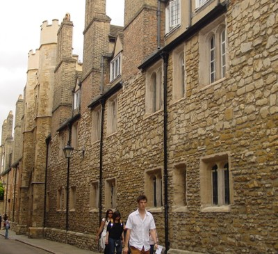
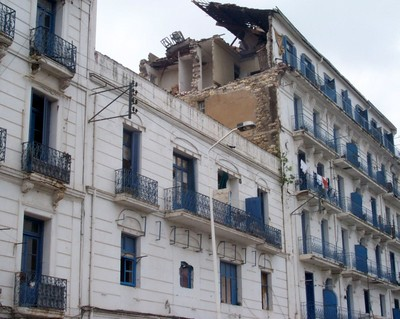

Piedra (Piedra sin tallar) o semi tallada [STRUB]
Piedra sin tallar Mampostería de piedra compuesta por piedras sin tallar o gruesamente cortadas y usadas para la construcción con o sin mortero. Hay dos tabiques de muros y un núcleo, usualmente relleno con piedra sin tallar y barro. La mampostería de piedra semi tallada se caracteriza por un muro de tabique (usualmente exterior) construido con piedras talladas; usualmente sólo la superficie de la piedra expuesta se talla. En algunos casos, la mampostería de piedra puede ser reforzada, frecuentemente con elementos de madera (wood-reinforced).

Mampostería de piedra sin tallar, Italia (T. Schacher)

Mampostería de piedra sin tallar construida usando piedras de río con mortero de cemento y cal, usualmente de espesor de 250 mm, Sumatra occidental, Indonesia (J. Bothara)

Mampostería de piedras sin orden y sin tallar, Cambridge, United Kingdom (S. Brzev)

Edificios de mampostería de piedra en Algiers dañados por el terremoto de 2003 Boumerdes, Algeria (M. Farsi)

Mampostería de piedra sin tallar con bandas de madera, NWFP, Pakistan (J. Bothara)

Mampostería de piedra sin tallar, Maharashtra, India (S. Brzev)


Mampostería de piedra semi tallada, Maharashtra, India (S. Brzev)

Mampostería de piedra semi tallada en mortero de barro, Chile (S. Mihaldzic)


Mampostería de piedra sin tallar, Marrakesh, Marruecos (C. Scawthorn)